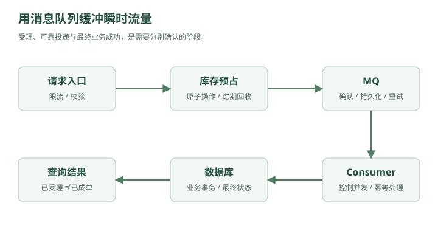

晚上 7 点 59 分 50 秒。
秒杀活动页面已经打开。
商品：
某款热门显卡
库存：10000
预约人数：
2,000,000
林默盯着监控。
QPS 还很低。
300
500
800
8 点整。
所有人同时点下：
立即购买
监控图瞬间变成：
QPS
/\
/ \
/ \
_________/ \________
峰值：
280,000 QPS
数据库连接池：
200/200
应用线程：
全部占满
MySQL：
CPU 100%
然后开始：
timeout
timeout
timeout
整个系统像被一拳打懵。
一、真正的问题不是“总请求太多”
林默第一反应：
“是不是机器太少？”
老周问：
“这 200 万个请求，是一直这么多吗？”
“不，主要就是 8 点那几分钟。”
“那你为了 5 分钟流量，准备平时养几百台机器？”
林默沉默。
这时老周画了一条线：
正常流量：
____----____----____
秒杀流量：
___________/\___________
他说：
“你现在的问题，不是一天处理不了这么多请求。”
而是：
请求在同一时间涌进来了。
这就是：
流量尖峰
Traffic Spike。
二、如果一次只能处理 5000 个怎么办？
假设数据库稳定承受：
5000 requests/s
但一瞬间来了：
200000 requests/s
直接硬扛：
200000
↓
MySQL
必炸。
老周问：
“如果这些请求不要求立刻执行呢？”
林默：
“什么意思？”
“先排队。”
三、消息队列正式登场
老周在系统中间画了一个盒子：
用户
↓
App
↓
Message Queue
↓
Consumer
↓
MySQL
用户请求不再直接冲数据库。
而是：
用户
↓
把“下单请求”写入队列
↓
立即返回“处理中”
后台消费者慢慢处理：
MQ
↓
5000/s
↓
MySQL
于是原本：
200000/s
↓
MySQL
变成：
200000/s
↓
MQ
↓
5000/s
↓
MySQL
数据库终于可以喘气。
这就是：
削峰填谷
Peak Shaving。
四、为什么叫削峰填谷？
想象水库。
暴雨来了：
上游洪水
↓↓↓↓↓↓↓↓↓↓
如果直接冲下游：
洪水
↓
城市
↓
淹了
加一个水库：
洪水
↓
水库
↓
慢慢放水
↓
城市
消息队列在系统里就是这个水库。
请求高峰时：
先积在 MQ
流量低谷时：
Consumer 继续处理
于是：
把瞬时压力，变成一段时间内的稳定压力。
五、这就是系统设计里一个极重要的思想：缓冲
其实你之前已经见过类似思想。
比如：
CPU 和内存速度不一致
↓
Cache
生产者和消费者速度不一致：
Producer 太快
Consumer 太慢
↓
Queue
所以 MQ 本质上不仅是“发消息”。
它还是一个：
Buffer
缓冲层。
六、同步调用为什么危险？
原来下单流程：
用户点击下单
↓
创建订单
↓
扣库存
↓
扣优惠券
↓
发短信
↓
发邮件
↓
写积分
↓
记录日志
↓
返回成功
假设每一步：
创建订单 50ms
扣库存 30ms
优惠券 40ms
短信 200ms
邮件 300ms
积分 50ms
总延迟：
670ms+
而且只要邮件服务挂了：
用户下单失败？
这显然很奇怪。
用户买东西，为什么要等邮件发完？
七、异步化
于是老周把流程拆成：
用户
↓
创建订单
↓
扣库存
↓
返回成功
同时发送消息：
OrderCreated
然后：
┌→ 短信服务
├→ 邮件服务
OrderCreated → MQ ├→ 积分服务
└→ 日志服务
用户无需等待后续流程完成。
这叫：
异步化
Asynchronous Processing。
八、同步和异步到底差在哪？
同步：
A → B → C → D
A 必须等 B
B 必须等 C
C 必须等 D
任何一环慢：
整条链路慢
任何一环挂：
整条链路可能失败
异步：
A → MQ
然后：
MQ → B
MQ → C
MQ → D
A 把消息放进去就可以继续。
于是系统获得：
更低响应延迟
更好的解耦
更强的抗峰值能力
九、MQ 的三个核心价值
林默总结：
1. 削峰
瞬时 20 万 QPS
↓
MQ
↓
稳定 5000 QPS 消费
2. 异步
非核心流程
不阻塞用户请求
3. 解耦
原来：
订单服务
↓
短信服务
↓
邮件服务
↓
积分服务
订单服务需要知道所有下游。
现在：
订单服务
↓
MQ
下游自己订阅。
订单服务甚至不需要知道：
到底有几个消费者
十、但 MQ 一上线，新的问题立刻来了
某天用户付款成功。
订单服务发送：
PaymentSuccess
准备让履约服务发货。
结果：
订单服务
↓
发送消息
↓
网络断了
消息没进 MQ。
数据库里：
订单 = 已支付
但下游永远没收到：
PaymentSuccess
于是：
钱扣了
货没发
林默脸色变了。
老周：
“消息队列最难的地方，从来不是 send()。”
而是：
消息可靠性
十一、第一种事故：消息丢失
消息可能在哪丢？
整条链路：
Producer
↓
Broker
↓
Consumer
三个地方都可能出事。
Producer 丢
发送失败
Broker 丢
消息刚进内存
MQ 宕机
Consumer 丢
消费者拿到消息
还没处理完
就确认成功
然后进程挂了
所以要保证可靠性，就必须考虑整个链路。
十二、Producer 怎么保证消息真的发出去？
最简单：
send(message)
不够。
通常需要：
发送
↓
等待 Broker ACK
↓
确认收到
如果没有 ACK：
重试
于是：
Producer
↓
Broker
↓
ACK
这样 Producer 才知道：
“Broker 已按当前确认配置接收了消息；这还不代表消费者已处理成功。”
十三、Broker 怎么保证不丢？
如果 MQ 只是把消息放内存：
RAM
机器断电：
消息没了
所以重要消息通常需要：
持久化
Persistence。
比如写入：
磁盘日志
并且 Broker 本身最好：
多副本
这样一台机器挂了：
Replica 还有数据
十四、Consumer 怎么保证处理完再确认？
错误流程：
Consumer 收到消息
↓
立刻 ACK
↓
开始处理
↓
程序崩溃
对于 RabbitMQ 这类任务队列，Broker 可以把已确认的投递标记为可删除。Kafka 的 offset 提交含义不同：它推进消费位置，消息仍由保留策略管理。
消息永久消失。
所以更合理：
Consumer 收到消息
↓
处理业务
↓
成功
↓
ACK
如果处理过程中挂了：
Broker 没收到 ACK
↓
重新投递
这样消息就不容易丢。
十五、但是“消息不丢”马上带来另一个问题
林默很满意。
“那就重试，保证不丢。”
老周：
“那你考虑过重复吗？”
例如：
Consumer 已经处理成功
库存扣了：
100 → 99
然后准备 ACK。
就在此时：
网络断了
Broker 没收到 ACK。
于是：
重新发送这条消息
Consumer 又执行一次：
99 → 98
但实际上只卖了一件商品。
这就是：
重复消费
十六、为什么很多 MQ 做不到“绝对只消费一次”？
在分布式系统里有一个非常麻烦的窗口：
业务执行成功
↓
ACK 还没成功
如果这时崩溃：
系统很难判断：
到底业务执行了没有？
所以工程上非常常见的语义是：
At Least Once
至少一次。
意思是：
在持久化、确认与重试等条件满足时争取至少处理一次
可能重复，仍需处理失败、过期与重试耗尽
既然可能重复，那业务就必须：
幂等
Idempotency。
十七、什么叫幂等？
一个操作执行：
1 次
和：
10 次
结果一样。
这就是幂等。
比如：
UPDATE orders
SET status = 'PAID'
WHERE id = 123;
执行一次：
PAID
执行十次：
还是 PAID
这种天然比较幂等。
但：
UPDATE account
SET balance = balance - 100
WHERE id = 1;
执行一次：
1000 → 900
执行两次：
1000 → 800
这就不幂等。
十八、如何做消费幂等？
最常见的办法之一：
每条业务消息有唯一 ID。
比如：
message_id = abc123
Consumer 处理前：
查询 abc123 是否处理过
如果处理过：
直接跳过
没处理：
执行业务
↓
记录 abc123 已处理
例如：
processed_message
abc123
abc124
abc125
这就是：
去重
Deduplication。
工程补充：“先查再做再记录”只表达思路，不能单独保证并发幂等。需要唯一约束，并将去重记录和业务更新放在同一个本地事务中；若涉及外部副作用，还需使用对方的幂等键或设计补偿、对账。
十九、数据库唯一索引也能做幂等
比如优惠券发放：
user_id
coupon_id
建立唯一索引：
UNIQUE(user_id, coupon_id)
消息重复消费：
第一次：
插入成功
第二次：
唯一索引冲突
于是系统知道：
已经处理过
这比单纯：
先查再插
更可靠。
因为并发下：
查
↓
都发现没有
↓
同时插
可能还是重复。
所以：
唯一约束往往是幂等设计的重要兜底。
二十、消息顺序又出问题了
某个订单状态依次变化：
CREATED
↓
PAID
↓
SHIPPED
↓
FINISHED
MQ 收到：
消息1：PAID
消息2：SHIPPED
结果由于多个消费者并发：
Consumer A 处理 SHIPPED
Consumer B 处理 PAID
最终状态可能变成：
PAID
订单竟然从已发货退回已支付。
这就是：
消息乱序
二十一、顺序消息怎么做？
如果要求：
同一个订单
的消息必须有序。
可以让相同：
order_id
路由到同一个队列或同一个分区。
例如：
hash(order_id) % partition_count
所以：
order123 的所有消息
↓
Partition 2
再由单一逻辑顺序消费。
这样：
CREATED
PAID
SHIPPED
FINISHED
才能按序处理。
注意这里的关键词：
通常保证的是“局部有序”，不是整个系统所有消息全局有序。
因为全局有序意味着：
所有消息
↓
一个队列
↓
一个消费者
吞吐量会非常差。
二十二、Kafka 为什么总提 Partition？
林默这时终于理解 Kafka 的一个核心设计。
假设一个 Topic：
orders
只有一个 Partition。
那么：
吞吐受一个 Partition 限制
把它拆成：
Partition 0
Partition 1
Partition 2
Partition 3
不同消息可以并行处理。
例如：
user/order hash
↓
不同 Partition
这样获得：
更高吞吐
同时：
单个 Partition 内仍可以保持顺序。
于是：
并行性
和
局部顺序
得到一个平衡。
二十三、RabbitMQ 和 Kafka 怎么理解？
这里先不背详细区别。
用故事理解。
RabbitMQ 更像：
快递分拣中心
你发一个任务：
请处理这个订单
Broker 负责把任务交给消费者。
常见强调：
路由
确认
消费
队列语义
适合很多：
业务异步任务
Kafka 更像：
巨型日志流水带
消息不断追加：
offset 1
offset 2
offset 3
offset 4
...
消费者记录自己读到哪里：
offset = 10086
因此非常适合：
超高吞吐
日志
事件流
数据管道
Event Streaming
这只是直觉层面的区别。
并不是说：
RabbitMQ 不能高吞吐
Kafka 不能做业务消息
而是二者设计重心不同。
二十四、然后消息开始积压
秒杀结束。
林默发现 MQ 监控：
Queue Length:
100万
300万
800万
1200万
消费者：
消费速度：5000/s
生产者：
生产速度：30000/s
结果显然：
每秒多积压 25000 条
这叫：
消息积压
Message Backlog。
二十五、消息积压怎么办？
先找原因。
可能：
Consumer 太少
那就增加消费者。
Consumer 1
Consumer 2
Consumer 3
...
如果 Topic 有足够 Partition，就可以并行消费。
也可能：
单条消息处理太慢
比如每条：
200ms
那要优化：
数据库
外部 RPC
批处理
IO
也可能下游已经到极限。
例如数据库最多：
5000/s
你就算开：
1000 个 Consumer
也没用。
反而所有消费者一起打数据库：
数据库再次挂掉
所以系统设计绝不能：
“积压了就无脑加消费者。”
必须找真正瓶颈。
二十六、这引出了背压
如果消费者已经处理不过来，生产者是不是还应该无限往里塞？
不一定。
需要：
Backpressure
背压。
本质是：
下游告诉上游：我已经吃不下了，你慢一点。
比如：
Consumer 处理不过来
↓
Queue 过长
↓
上游限流
或者：
拒绝非关键请求
降级
这和生活里很像。
餐厅厨房只能做：
100 单/小时
前台却接：
10000 单/小时
队列再大也只是：
延迟死亡。
二十七、MQ 不能创造吞吐量
老周特别强调：
“消息队列只是把压力推迟。”
假设数据库一天最多处理：
1 亿条
你每天送进 MQ：
10 亿条
那队列最终一定：
无限增长
MQ 能解决：
瞬时峰值
不能解决：
长期处理能力不足
这点非常重要。
二十八、最难的问题来了：数据库成功，消息发送失败
某天下单。
代码：
1. INSERT order
2. send OrderCreated
第一步：
数据库成功
第二步：
MQ 发送失败
于是：
订单存在
但：
下游永远不知道
如果反过来：
1. send OrderCreated
2. INSERT order
第一步成功。
第二步数据库失败。
于是下游收到：
一个根本不存在的订单
林默开始头疼。
这其实是：
本地事务与消息的一致性问题
二十九、Outbox Pattern
老周给了一个非常经典的方案。
不要直接：
事务提交
+
发送 MQ
而是在同一个数据库事务里写两张表：
BEGIN;
INSERT INTO orders ...;
INSERT INTO outbox(
event_type,
payload,
status
) ...;
COMMIT;
于是：
订单
和
待发送消息
要么一起成功。
要么一起失败。
之后一个后台任务：
扫描 outbox
↓
发送 MQ
↓
发送成功
↓
标记 SENT
这叫：
Transactional Outbox
事务 Outbox。
三十、为什么这个方案靠谱？
因为：
orders
和：
outbox
在同一个 MySQL 本地事务里。
MySQL 可以保证：
原子性
于是避免：
业务提交了
消息却完全没记录
至于 MQ 发送可能重复？
没关系。
我们前面已经解决：
Consumer 幂等
你会发现系统设计很多方案是连锁的。
三十一、最终一致性再次出现
订单创建后：
订单 DB
已经成功。
积分系统可能：
100ms 后
才更新。
短信：
1 秒后
才发送。
推荐系统：
5 秒后
才看到这个事件。
它们不是同一时刻一致。
但最终都会追上。
这就是：
最终一致性
又出现了。
你现在应该开始看到：
最终一致性不是某一个技术点，而是大型分布式系统经常采用的一种取舍。
三十二、回到秒杀
现在林默重新设计秒杀流程。
用户来了：

查看文字版示意
请求
↓
限流
↓
Redis 原子扣减库存
↓
成功
↓
发送 MQ
↓
返回“请求已受理，订单确认中”
后台：
MQ
↓
创建订单
↓
支付
↓
履约
这样最危险的数据库写入不会直接面对：
20 万 QPS
而是由 MQ 平滑处理。
三十三、但是为什么先扣 Redis 库存？
如果 200 万人抢 1 万件。
你没必要让：
199 万个失败请求
全进 MQ。
更好的做法：
Redis stock = 10000
用户请求先执行原子操作：
if stock > 0:
stock--
success
else:
sold out
只有前 1 万左右成功请求：
进入 MQ
于是：
200 万请求
↓
Redis
↓
1 万成功
↓
MQ
↓
DB
流量在前面就被截断。
工程补充：Redis 预扣与 MQ 发送不构成跨系统原子事务。发送失败、订单创建失败或支付超时都可能留下预占库存，需要可靠事件记录、幂等补偿、预占超时与对账；受理成功不能直接等同于最终下单成功。
这就是系统设计里的另一条重要原则：
越便宜的过滤越往前放。
三十四、为什么必须“原子扣库存”？
如果这样写：
1. GET stock
2. 判断 stock > 0
3. SET stock = stock - 1
两个请求同时：
A GET → 1
B GET → 1
然后：
A SET → 0
B SET → 0
两个人都认为自己抢到了最后一件。
这就是并发竞态。
所以需要：
Redis Lua
把：
判断
+
扣减
放进一个原子操作。
这其实已经非常接近真实高并发权益/秒杀系统的设计了。
三十五、系统现在已经非常像一个真正的大型系统
现在架构：
┌→ App 1
Client → Load Balancer ─────┼→ App 2
└→ App 3
│
┌──────┴──────┐
│ │
Redis MQ
│ │
快速判断 Consumer
│
▼
DB Shards
Redis：
挡热点请求
库存原子扣减
Session
缓存
MQ：
削峰
异步
解耦
DB：
最终持久化业务数据
你会发现它们不是：
随便堆中间件
而是每一层解决不同问题。
第五章结束
这一章最重要的因果链是：
瞬时流量过高
↓
数据库扛不住
↓
消息队列
↓
削峰填谷
↓
异步化
↓
系统解耦
↓
消息可能丢失
↓
ACK + 持久化 + 重试
↓
重试导致重复消息
↓
幂等
↓
并发消费导致乱序
↓
分区内顺序
↓
消费者处理不过来
↓
消息积压
↓
扩消费者 / 优化下游 / 背压
↓
DB 和 MQ 无法天然一个事务
↓
Outbox
↓
最终一致性
面试遇到：
“上游突然 10 万 QPS，但下游只能处理 500 QPS 怎么办？”
现在不要只回答一句：
“用 MQ 削峰。”
更完整的逻辑应该是：
先判断这是短时尖峰还是持续流量。如果是短时尖峰，可以通过消息队列把同步请求转为异步任务，让上游快速入队，下游按自身处理能力稳定消费，实现削峰填谷。但还需要考虑队列容量、消息积压、消费并发、消息可靠性和幂等。如果长期生产速率高于消费速率，MQ 只能延迟问题，还必须扩展下游真实处理能力。
下一章我们继续处理这个系统最危险的问题：
下一章：门外已经挤了两百万人——限流、熔断、降级与雪崩
到时候会把：
固定窗口、滑动窗口、漏桶、令牌桶、Redis 限流、429、熔断器、Circuit Breaker、Fallback、服务雪崩、超时、重试风暴、隔离
全部放进一次真正的“大规模事故”里。